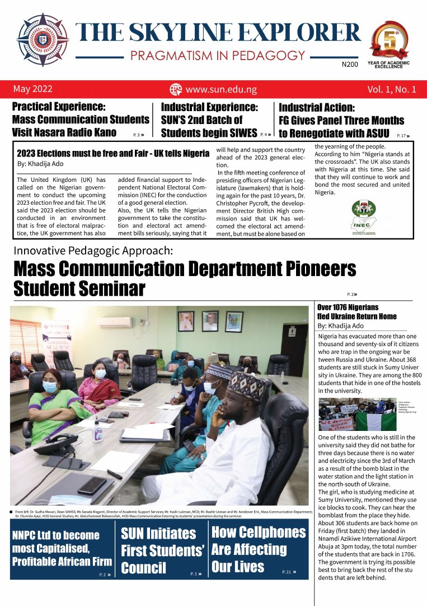
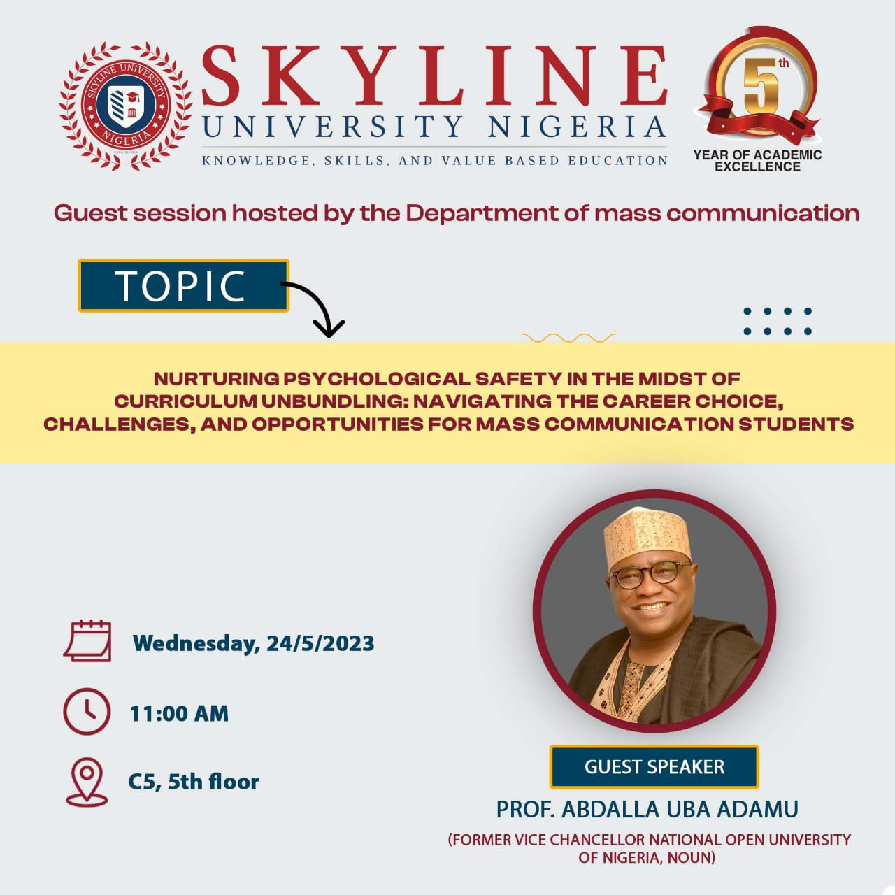
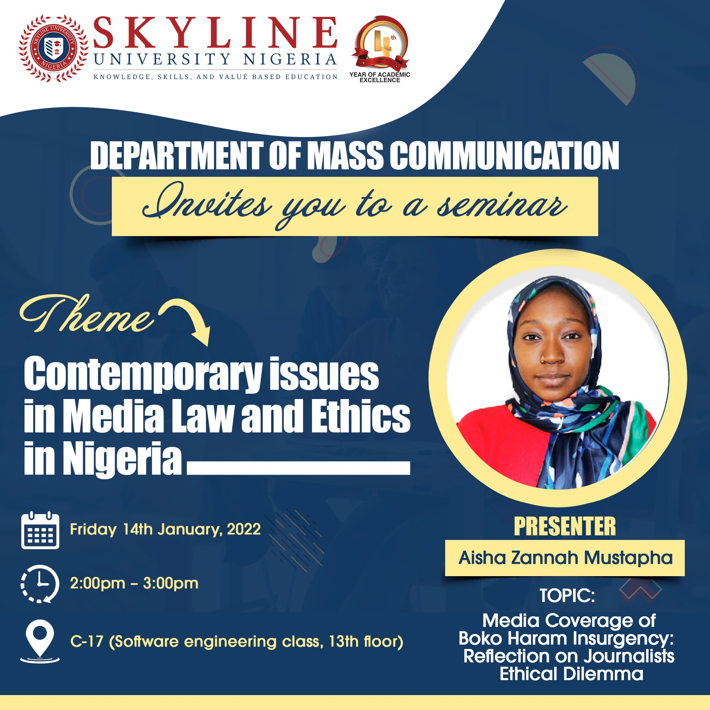
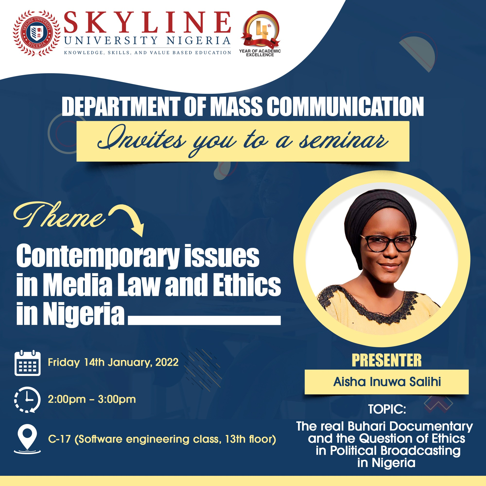
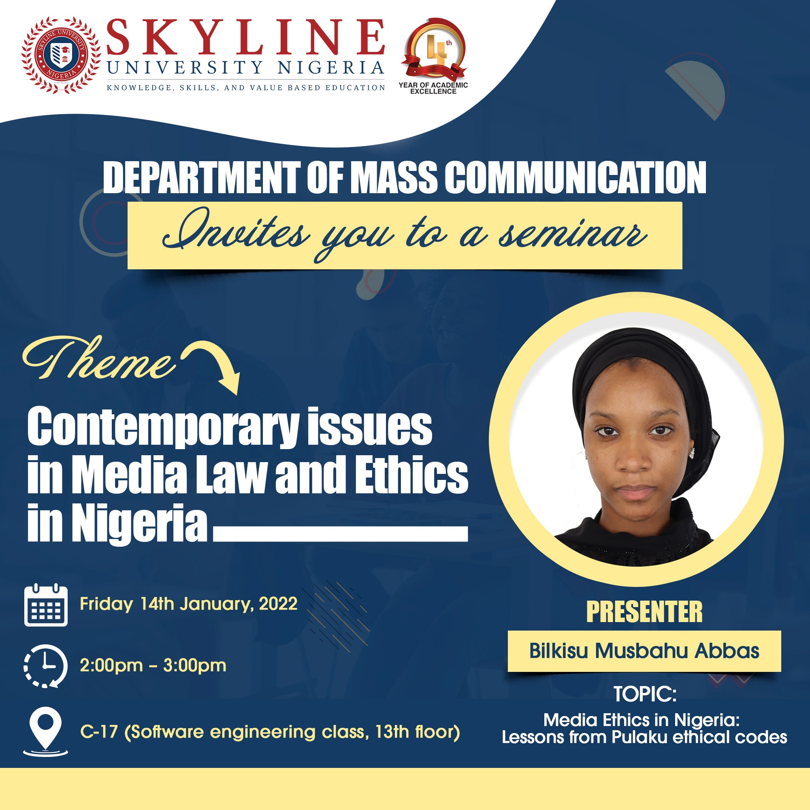
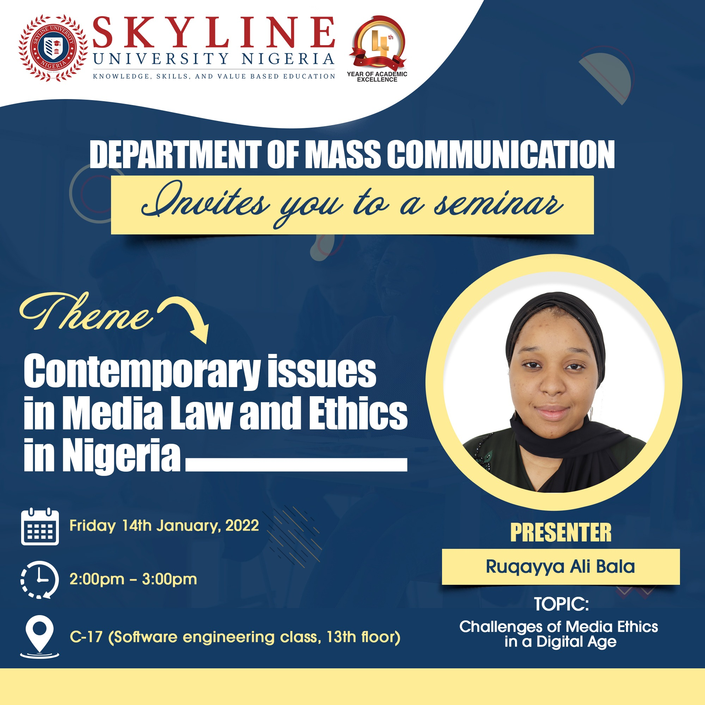

From the classroom to the newsroom
Northeastern University
I teach undergraduate Public Speaking. Students practice making an argument, using evidence, and speaking to audiences who may see an issue differently.
Skyline University Nigeria
I taught media and communication courses and served as founding Head of Mass Communication from 2021 to 2023. I helped develop the curriculum, mentored students, and organized opportunities for them to publish, produce programmes, and learn from working journalists.
Student newspapers and campus publishing


The Skyline Explorer
I helped establish this departmental newspaper, served as its general editor, and mentored student reporters.
View the newspaper on LinkedInThe Skyline
Course lecturer and supervising editor for the inaugural issue, produced by second-year Mass Communication students in June 2021.
Newsline
I joined the editorial team of the university’s annual magazine in 2021 and served as editor-in-chief from 2022 to 2023.
Read the launch announcementDocumentary and television
Skyline Reflection
I launched this television news magazine in 2022 to cover campus life and give students experience in broadcast production.
Student video productions
Produced by my Mass Communication students at Skyline University Nigeria.
Documentary project
I worked on a documentary project during my time at Skyline University Nigeria.
Technical visits and work experience
Abubakar Rimi Television (ARTV)
I led second-year Mass Communication students on a studio visit in Kano on May 19, 2021. Staff showed students how the station develops programmes, sources content, and runs day-to-day operations. I also organised visits to Freedom Radio, Express FM, and other stations in Kano State.
I oversaw the Students Industrial Work Experience Scheme (SIWES), through which students gained firsthand experience in professional settings.
Read Skyline University’s field trip reportWorkshops, seminars, and guest lectures


Psychological safety and career choices in mass communication


Ethical dilemmas in covering the Boko Haram insurgency


Political broadcasting and The Real Buhari documentary


Media ethics and Pulaku ethical codes


Challenges of media ethics in a digital age
Event descriptions and guest speakers
Guest lecture series
I organized a guest lecture series for Mass Communication students. One session featured Clement Oloyede, then Northern Bureau Chief of Daily Trust.
Contemporary Issues in Media Law and Ethics in Nigeria
I organized this departmental seminar at Skyline University Nigeria on .
- Aisha Zannah Mustapha presented "Media Coverage of Boko Haram Insurgency: Reflection on Journalists' Ethical Dilemma."
- Aisha Inuwa Salihi presented "The Real Buhari Documentary and the Question of Ethics in Political Broadcasting in Nigeria."
- Bilkisu Musbahu Abbas presented "Media Ethics in Nigeria: Lessons from Pulaku Ethical Codes."
- Ruqayya Ali Bala presented "Challenges of Media Ethics in a Digital Age."
Nurturing Psychological Safety in the Midst of Curriculum Unbundling
I organized this departmental guest session on May 24, 2023, with Professor Abdalla Uba Adamu, former vice chancellor of the National Open University of Nigeria. The session addressed career choices, challenges, and opportunities for mass communication students as the curriculum was reorganized.